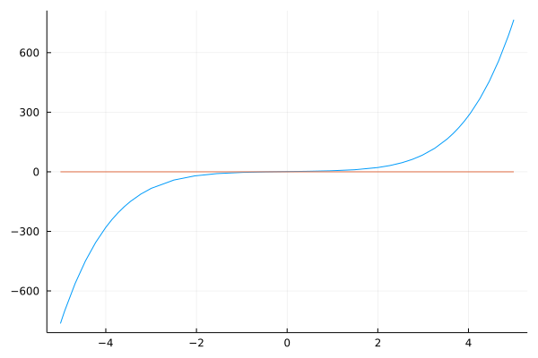

Solutions of Nonlinear Equations
A solution to an equation $f(x) = 0$ is called a root, that is $x^*$ is a root of $f(x)=0$ if
\[f(x^*) = 0\]
One can find a root of a function $ f : \mathbb{R} \rightarrow \mathbb{R}$ only if the function is continuous, i.e. if you can drow the graph of $y = f(x)$ on a sheet of paper without lifting your pencil.
Bisection Algorithm
We begin with the most intuitive method for finding roots of scalar equations
\[f(x) = 0\]
Where $ f : \mathbb{R} \rightarrow \mathbb{R}$ (i.e. $f$ maps real numbers to real numbers. )
Intermediate Value Theorem
Assuming that $f$ is a continuous real valued function and we know two real numbers $a<b$ such that $f(a)*f(b) < 0$. Then ehre exists a real number $c$ such that:
\[a < c < b\]
($c$ is between $a$ and $b$)
\[f(c) = 0\]
($c$ is a root)
The values $a$ and $b$ are said to bracket the root $c$.
Implementation
Let's take an example with the function
\[f(x) = 0.2x^5 + x^3 + 3x + 1\]
Let's implement and plot this function in Julia to get a sens of it:
using Plots
f(x) = 0.2*x^5+x^3+3*x+1 # our function
f_2(x) = 0 # utility function to plot the zero line
plot(f, label = "")
plot!(f_2, label = "")
Bisection method is a root-finding method that applies to any continuous functions for which one knows two values with opposite signs.
The method consists of repeatedly bisecting the interval defined by these values and then selecting the subinterval in which the function changes sign, and therefore must contain a root.
Iteration tasks
The input for the method is a continuous function $f$, an interval $[a,b]$, and the function values $f(a)$ and $f(b)$.
The function values are of opposite sign (there is at least one zero crossing whitin the interval).
Each iteration perfoms these steps:
- Calculate $c$, the midpoint of the interval, $c = \frac{a+b}{2}$.
- Calculate the function value at the midpoint, $f(c)$.
- If converge is satisfactory (that is, $c-a$ is sufficiently small, or $|f(c)|$ is sufficiently small), return $c$ and stop iterating.
- Examine the sign of $f(c)$ and replace either $(a, f(a))$ or $(b,f(b))$ with $(c, f(c))$ so that there is a zero crossing within the new interval.
Example
Let's start with an easy problem: Consider f(x) = (x-1)^2 - 4.
We know $f(3) = 0$ ; hence $x = 3$ is a root of $f(x)$.
Let's implement it in Julia:
function f(x)
return (x-1)^2 - 4
end
a = 0; b = 5; # The interval
delta = 1e-9; # the convergence threshold
# Set a max iteration so we don't get stuck in the loop forever
MAX_ITER = 100;
N = 1; # counter for iteration
while N < MAX_ITER
# Step 1: calculate c, the midpoint of the interval
c = (a + b) / 2;
# Step 2: calculate the function value at the midpoint c
fc = f(c);
# Step 3: if converge is satisfactory (c-a sufficiently small or absolute function value sufficiently small), return C and stop
if abs(c-a) < delta || abs(fc) < delta
println("Converged at iteration: N = ", N)
break
end
N += 1
# Step 4: examine the sign of f(c) and replace either (a, f(a)) or (b, f(b)) with (c, f(c)) so that there is a zero crossing the new interval
if sign(fc) == sign(f(a)) # update the search interval
a = c;
else
b = c;
end
end
c = (a + b) / 2
print("c:", c, "\n")
print("f(c):", f(c), "\n")The output will be:
Converged at iteration: N = 33
c:2.9999999998835847
f(c):-4.656612873077393e-10Newton's method
Newton's method is a root-finding algorithm which produces successively better approximations to the roots (or zeros) of a real-valued function.
The idea is to start with an initial guess which is reasonably close to the true root, then to approximate the function by its tangent line using calculus, and finally to compute the x-intercept of this tangent line by algebra.
The equation of the tangent line to the curve $y = f(x)$ at $x = x_n$ is:
\[y = f'(x_n)(x-x_n)+f(x_n)\]
Where $f'$ denotes the derivative.
The derivative of $f$ shows its rate of change with respect to $x$. Assuming no knowledge of calculs, we use an approximation method called finite difference method to replace the derivative term.
Finite difference method
Finite differences approximate the derivatives of functions via discretizations. Three types are commonly considerd: forward, backward and central finite differences. Here we will introduce central finite differences only, because it gives the best approximation of the derivative.
Consider $f(x)$ and its derivative at $x = a$, i.e., $f'(a)$. A central finite difference approximation of the derivative is given by:
\[f'(a) = \frac{f(a+h) - f(a-h)}{2h}\]
The finite difference method relies on discretizing a function on a grid.
Back to Newton's method
We now replace the derivative in $y = f'(x_n)(x - x_n) + f(x_n)$ with its finite difference approximation.
To find a root of $f(x)$, we set $y=0$.
\[y = \frac{f(x_n+h) - f(x_n - h)}{2h}(x-x_n)+f(x_n)=0\]
and
\[x = x_n - 2h \frac{f(x_n)}{f(x_n+h)-f(x_n-h)}\]
To use this last formula iteratively, we use the following succession rule:
\[x_n+1 = x_n - 2h \frac{f(x_n)}{f(x_n+h)-f(x_n-h)}\]
Starting with an initial guess, $x_0$, that is near the solution, we can iterate to find the root. It is important to choose a sufficiently smalll $h$ to reduce the discretization error.
Example
Let's consider the same example than with the bisection algorithm: we consider $f(x) = (x-1)^2 - 4$.
We know $f(3) = 0$ ; hence $x = 3$ is a root of $f(x)$. We pick $x_0 = 2$ as the initial guess.
In Julia:
function f(x)
return (x-1)^2 - 4
end
x₀ = 2; h = 0.01/2; # initial guess x₀ and step size h
delta = 1e-9; # set a convergence threshold
# set a max iteration so we don't get stuck in the loop
MAX_ITER = 100;
N = 1; # counter for iteration
while N < MAX_ITER
# evaluate f at current guess
f₀ = f(x₀ - h); # f(xₙ - h)
f₁ = f(x₀); # f(xₙ)
f₂ = f(x₀ + h); # f(xₙ + h)
df = f₂ - f₀ # approximate the derivative with finite difference
if abs(df) < delta
println("Newton's method did not converge; derivative is near zero.")
break
else
dx = -2*h * (f₁ / (f₂ - f₀)); # finite difference approximation
end
if abs(dx) < delta
println("Converged at iteration: N = ", N)
break
else
x₀ = x₀ + dx; # find next xₙ
end
N += 1;
end
print("root: ", x₀, "\n")
print("f(root): ", f(x₀), "\n") Which gives:
Converged at iteration: N = 6
root: 3.000000000000002
f(root): 8.881784197001252e-15Derivatives & Jacobian
- The input is a vector such as $x \in \mathbb{R}^m$. If we use the standard basis of $\mathbb{R}^m$, we have:
\[x = x_1 e_1 + x_2 e_2 + \cdots + x_n e_m = \sum^m_{i=1}x_ie_i\]
- Then we can use a finite difference approximation to compute each column of $A = [a^{col}_1 \cdots a^{col}_m]$ as
\[a^{col}_i = \frac{\partial f(x_0)}{ \partial x_i} = \frac{f(x_0 + he_i) - f(x_0 - he_i)}{2h}\]
- For the general case of $f : \mathbb{R}^m \rightarrow \mathbb{R}^n$, $A$ is an $n*m$ matrix and called the Jacobian of $f$, i.e.,
\[A_{n*m} = [a^{col}_1 \cdots a^{col}_m] = \frac{\partial f(x)}{\partial x}\]
- Each column of the Jacobian $a^{col}_i = \frac{\partial f(x)}{ \partial x_i} \in \mathbb{R}^n$ shows the rate of change of $f$ along $e_i$.
Let's implement the function in Julia:
using LinearAlgebra
function Jacobian(func, x₀, h = 0.001)
# Numerical Jacobian of f:R^m -> R^n
m = length(x₀); # Domain dimension
f₀ = func(x₀);
n = length(f₀); # Range dimension
if m == 1 # f:R -> R^n
return (func(x₀ .+ h) .- func(x₀ .- h)) ./ (2 * h)
else
Im = Matrix(1.0I, m, m); # Create standard basis for I_m
A = zeros(n, m); # Create Jacobian matrix
# Compute and fill in the columns of the Jacobian using central difference
for i = 1:m
ei = Im[:, i:i]
A[:,i] = (func(x₀ + h * ei) - func(x₀ - h * ei)) / (2*h);
end
return A
end
end Example
For the function
\[f(x_1, x_2, x_3) := \left[ \begin{array}{c} x_1 x_2 x_3 \\ \log(2+\cos(x_1)) + x_2^{x_1} \\ \frac{x_1 x_3}{1+ x_2^2} \end{array} \right]\]
we want to compute its Jacobian at the point:
\[x_0 = \left[ \begin{array}{c} \pi \\ 1.0 \\ 2.0 \end{array} \right]\]
Let's test our function with Julia:
function f3(x)
return [x[1]*x[2]*x[3]; log(2+cos(x[1])) + x[2]^x[1]; (x[1]*x[3] / (1+x[2]^2))]
end
x₀ = [π; 1.0; 2.0] # initial guess
A = Jacobian(f3, x₀)Which gives us the Jacobian:
3×3 Matrix{Float64}:
2.0 6.28319 3.14159
0.0 3.14159 0.0
1.0 -3.14159 1.5708Newton-Raphson for Vector Functions
Let $x_k$ be our current approximation of a root of the function $f$.
We write the linear approximation of $f$ about $x_k$ as:
\[f(x) \approx f(x_k) + A(x-x_k)\]
Where $A = \frac{\partial f(x_k)}{\partial x}$
Iteration tasks
We can formulate the Newton-Raphson algorithm such as:
- Start with an initial guess $x_0$ $(k=0)$
- Solve the linear system $A\delta x_k = -f(x_k)$
- Update the estimated root $x_{k+1} = x_k + \delta x_k$
- Repeat (go back to step 2) until convergence